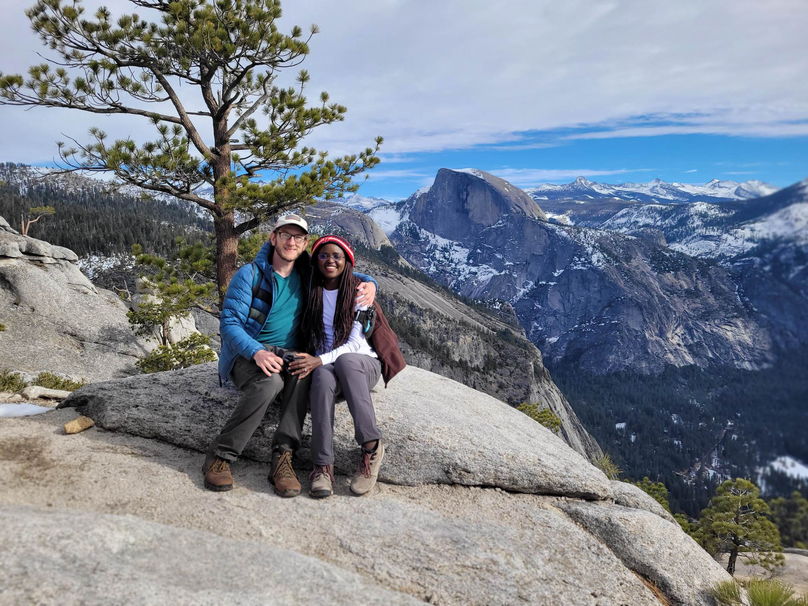
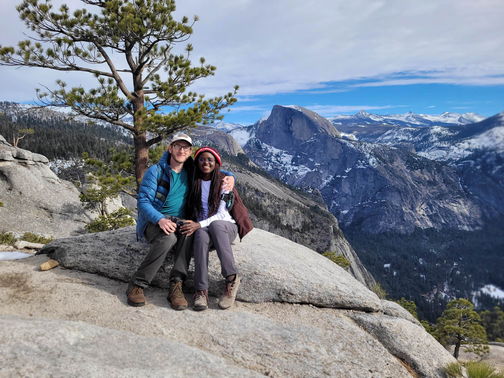

Solange and Mark both volunteered at a clinic in March of 2016. She liked his playlist. He thought she was flirting. NARRATOR: She wasn't. He asked her out to breakfast with the rest of the volunteers. She told him, "I don't eat breakfast."
A few days later, Mark found Solange on Facebook through mutual friends and invited her for breakfast. She said she had a meeting. Strike two. He asked about lunch (50/50 odds between lunch and dinner; she had to have at least one meal a day, right?). Surprisingly, she agreed to grab a bite at Snowbite.
Despite Mark's runny nose and Solange's aversion to noodles, the date lasted for six hours and ended with a romantic hike at the McAllen Nature Center. They fell hard for each other in no time and quickly became inseparable. That summer, Mark quit his job and asked Solange to join him on a cross-country road trip. If they could survive that, they could survive anything. They've been traveling together ever since.
 
